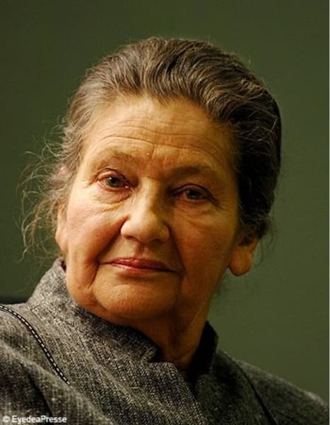
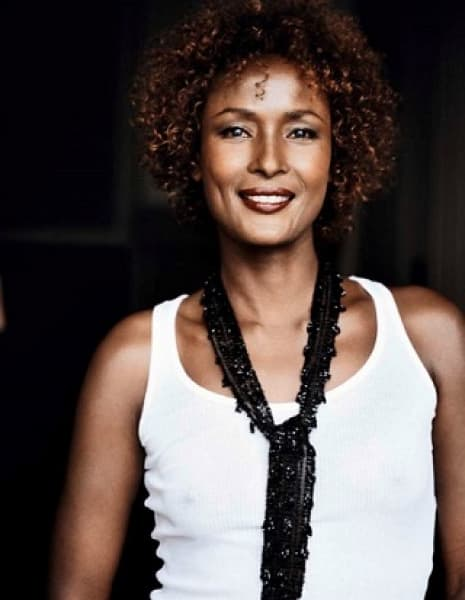
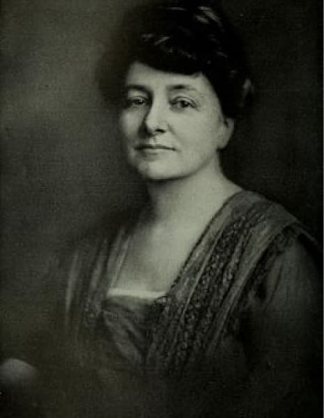

Galerie
Simone veil
Simone Veil née le 13 juillet 1927 et morte le 30 juin 2017. C'est une magistrate et une femme d’État française. Après des études de droit et de science politique, elle entre dans la magistrature comme haut fonctionnaire. En 1974, elle devient ministre de la Santé. Elle fait adopter la loi dépénalisant le recours à l'interruption volontaire de grossesse (IVG), loi appelée ensuite « loi Veil ».
Hélène Cixous

Hélène Cixous, elle est née le 5 juin 1937, c'est une écrivaine et dramaturge française.
Co-fondatrice du Centre Universitaire de Vincennes, elle y crée en 1974 le premier centre d'études féminines dans une université européenne.
Son essai Le Rire de la Méduse (1975) est considéré comme une œuvre déterminante du féminisme moderne.
Waris Dirie

Waris Dirie est une femme né le 21 octobre 1965 en Somalie.
A l’âge de 13 ans elle pris la fuite quand son père décida de la marier à un homme de 60 ans.
Une carrière de mannequin commença en 1987 en couverture de “Calendrier Pirelli”.
Lors d’une interview Waris révèle l’excision. Elle écrit son premier livre autobiographique “Fleur du désert” en 1998.
Ca lutte contre l’excision commença en 2002, en parlant et quand elle décida de fonder la “WARIS DIRIE FOUNDATION”.
Valérie Rey-Robert

En février 2019, Valérie Rey-Robert décide de sortir de l'anonymat et publie l'ouvrage “Une culture du viol à la française”.
En février 2019, elle décide de sortir de l'anonymat et publie l'ouvrage “Une culture du viol à la française” :
Du « troussage de domestique », à la « liberté d’importuner ».
Après le début du mouvement #MeToo, elle revient dessus et analyse les rapports qu'entretient la société française avec le viol.
Louise weiss

Louise Weiss, née le 25 janvier 1893 et morte le 26 mai 1983.
C'est une journaliste, femme de lettres, féministe et femme politique française, notamment doyenne des députés au Parlement européen (1979-1983).
En 1976, elle fut élevée à la dignité de Grand officier de la Légion d'honneur, troisième femme seulement à recevoir ce grade dans cet ordre.
Michelle obama

Michelle LaVaughn Obama,
née le 17 janvier 1964, est une avocate et essayiste américaine.
Quand elle épouse Barack Obama, elle devient la Première dame des États-Unis, la première afro-américaine de l'histoire du pays.
En 1993, la désormaisdevient la directrice générale du Chicago office of Public Alliés.
En 1996, elle travaille pour l'Associat Dean of Student Services.
Maud Wood Park

Maud Wood Park,
née le 25 janvier 1871, et morte le 8 mai 1955.
C’est une militante en faveur du droit de vote et des droits des femmes américaine.